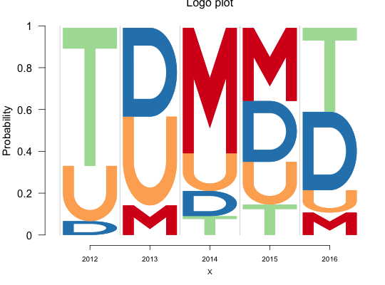
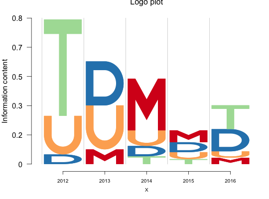

stacks logos created by the makemylogo function on top of
each other to build the logo plot.
logomaker(table, ic = NULL, cols, frame_width = NULL, ic.scale = TRUE,
alpha = 1, xaxis = TRUE, yaxis = TRUE, xaxis_fontsize = 10,
xlab_fontsize = 15, y_fontsize = 15, start = 1e-04,
yscale_change = TRUE, pop_name = NULL, xlab = "X",
ylab = "Information content", col_line_split = "grey80",
addlogos = NULL, addlogos_text = NULL)
Arguments
- table
- The input table (data frame or matrix) of counts across different
logos or symbols (specified along the rows) ans across different sites or
positions or groups (specified along the columns).
- ic
- A vector of same length as the number of columns in the
table,
repesenting the heights of the logo stacked bars for each position/site/block.
It defaults to NULL, in which case, the function computes the ic vector using
the ic_computer functionality.
- cols
- A vector of colors for the different logos or symbols stacked in the
logo plot. The length of this vector should match with number of symbols or
logos used in the plot, which is again ame as the number of rows in the input
table.
- frame_width
- The width of the frames for individual site/postion/column
in the logo plot. As default, all the columns have same width, equal to 1.
- ic.scale
- if TRUE, the height of the bars in the stacked logo chart for
each column is determined based on the information criterion input.
Otherwise, the bars are normalized so that the height of each bar is $1$.
Defaults to TRUE.
- alpha
- The Renyi entropy tuning parameter which is used in case of
scaling of the bar heights by information criterion. The default tuning
parameter value is 1, which corresponds to Shannon entropy.
- xaxis
- Binary specifying if there should be a X axis in the logo plot
or not. Defaults to TRUE.
- yaxis
- Binary specifying if there should be a Y axis in the logo plot
or not. Defaults to TRUE.
- xaxis_fontsize
- The size of the X-axis axis ticks.
- xlab_fontsize
- The size of the X-axis label.
- y_fontsize
- The size of the Y-axis font.
- start
- The starting point in Y axis for the first logo. Default is
0.0001 which is very close to 0.
- yscale_change
- If TRUE, adjusts the Y axis scale based on the size of
the bars, else keeps it to the maximum value possible, which is
ceiling(max(ic) under ic_computer defined IC criteria.
- pop_name
- User can mention a name of the population for which the logo
plot is created. Defaults to NULL when no population name is mentioned.
- xlab
- X axis label
- ylab
- Y axis label
- col_line_split
- The color of the line split between the consecutive groups
or blocks
- addlogos
- Vector of additional logos/symbols defined by user
- addlogos_text
- Vector of the names given to the additional logos/symbols defined by user.
Value
Plots the logo plot for the table data, with column names representing
the sites/blocks and the row names denoting the symbols for which logos are
plotted
Examples
counts_mat <- rbind(c(0, 10, 100, 60, 20),
c(40, 30, 30, 35, 20),
c(100, 0, 15, 25, 75),
c(10, 30, 20, 50, 70))
colnames(counts_mat) <- c("2012", "2013", "2014", "2015", "2016")
rownames(counts_mat) <- c("M", "U", "T", "D")
logomaker(counts_mat,
cols= RColorBrewer::brewer.pal(dim(counts_mat)[1],name = "Spectral"),
frame_width = 1,
ic.scale = FALSE)

logomaker(counts_mat,
cols= RColorBrewer::brewer.pal(dim(counts_mat)[1],name = "Spectral"),
frame_width = 1)
